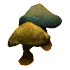

Грибы
Статьи / Прочее
Открыть в интерактивной вики →
| Цена | 3 |
|---|---|
| Вес | 1 |
Описание
| Грибы, найденные в норе гоблинов. Может, ими заинтересуется кто-то из жителей Приселка Трентиса. |
Применение
|
Как добыть
|

Открыть в интерактивной вики →
| Цена | 3 |
|---|---|
| Вес | 1 |
| Грибы, найденные в норе гоблинов. Может, ими заинтересуется кто-то из жителей Приселка Трентиса. |
|
|